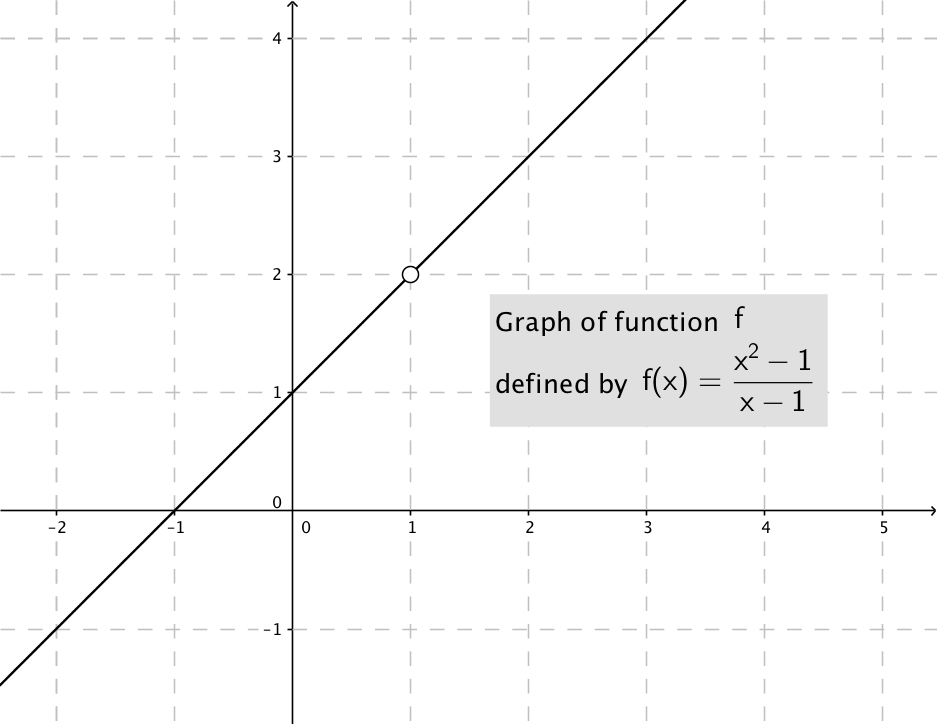
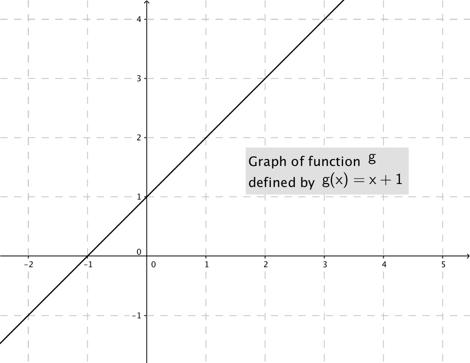

Use the graphs and the given definitions of the following two functions to answer
the questions below.


(a)
Find the domain of \(f\) and the domain of \(g\).
The domain of \(f\) is \((-\infty , 1) \cup (1, \infty )\) (all real numbers
except \(1\)). The domain of \(g\) is \((-\infty , \infty )\) (all real numbers).
(b)
Is \(f = g\)? (Why or why not?)
No, these two functions are not equal. Two functions
are equal if and only if they have identical domains and their values agree on all
points in the domain.
Since \(f\) and \(g\) have different domains, by part (a), they cannot be equal functions.
(c)
Looking at the graphs, find \(\lim _{x \to 1} f(x)\) and \(\lim _{x \to 1} g(x)\).
From the graphs we have that \(\lim _{x \to 1} f(x) = 2\) and \(\lim _{x \to 1} g(x) = 2\).